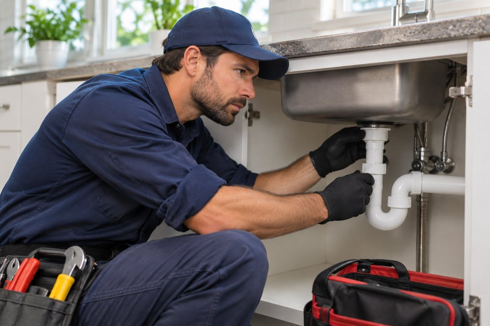

Leaks & Burst Pipes
Leaking pipes, damaged supply lines, water pooling and other urgent water concerns can require professional attention.
Ask About Plumbing HelpDealing with a leak, blocked drain, overflowing toilet or another plumbing problem? Call to enquire about potential connections with independent plumbing providers serving your area.
Call (555) 555-5555Provider availability and response times vary. No particular arrival time or 24-hour availability is guaranteed.
This independently operated site provides practical information about plumbing issues faced by homeowners, tenants and property managers in Long Prairie and surrounding Minnesota communities. It also provides a telephone enquiry and referral option.
Independent plumbing professionals may assist with a range of household and commercial issues. Service areas, qualifications, rates, appointments and availability are determined by individual providers, not this website.

Learn about common plumbing problems and call to ask about independent service providers in the Long Prairie area.
Leaking pipes, damaged supply lines, water pooling and other urgent water concerns can require professional attention.
Ask About Plumbing HelpKitchen and bathroom blockages, slow drainage and sewer backups are among the issues to discuss with a plumbing professional.
Ask About Drain ProblemsOverflowing toilets, running toilets, faulty fixtures and water heater leaks may need diagnosis and repair.
Ask About RepairsA few sensible steps can help limit further damage while you seek suitable plumbing assistance.
If it is safe to do so, locate and close the appropriate fixture shutoff valve or your main water supply valve to reduce a leak. Do not force a stuck valve.
Stay away from standing water near electrical equipment or outlets. Avoid contact with sewage and keep children and pets clear of affected areas.
When calling, explain where the issue is, when it started, whether water is still flowing and whether the property is safe to access. Availability varies by provider.
Information on this website focuses on Long Prairie, Minnesota, and nearby communities. Telephone enquiries may be referred to independent businesses where a suitable provider accepts enquiries in the caller's location. A referral is not guaranteed.
Enquire About Plumbing AssistanceCall the number below to make a plumbing enquiry. Calls may be tracked or recorded, and enquiries may be routed or referred to independent third-party providers. This website may receive compensation for qualifying referrals.
(555) 555-5555Call About Plumbing Help